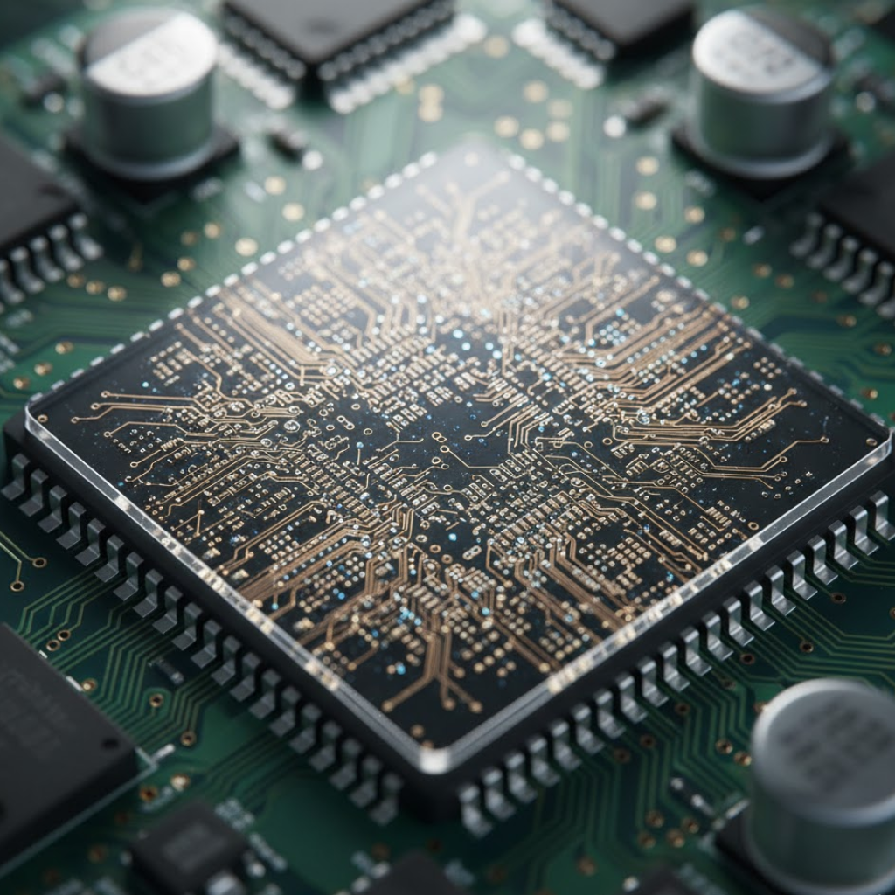
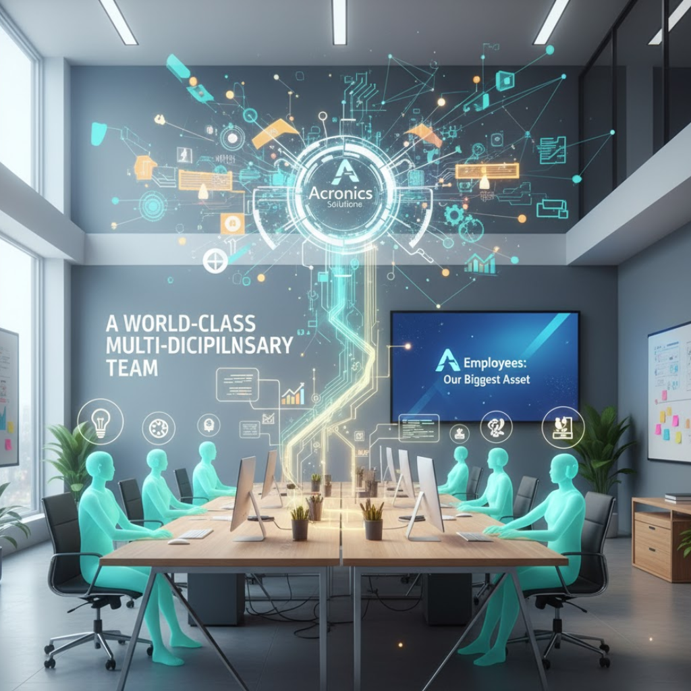

Our products
Acronics Solutions has one of the newest FPGA product portfolios in the market. We offer a wide range of premium quality, production-ready FPGA cards with Intel, Altera, and AMD FPGAs. Develop and deploy your application quicker and with reduced cost and risk by having us integrate your FPGA cards into our certified, integrated FPGA servers. We also provide a range of solutions to simplify application development on your Acronics Solutions FPGA card. Our solutions include development tools supporting, system monitoring, and FPGA examples. These are optimized for specific applications such as data capture and networking acceleration.
Our Values
Acronics Solutions thrives on teamwork, quality and leadership. We work hard to understand our customers’ and the market’s needs, lead the industry in developing new technologies and build quality into our products and services.
